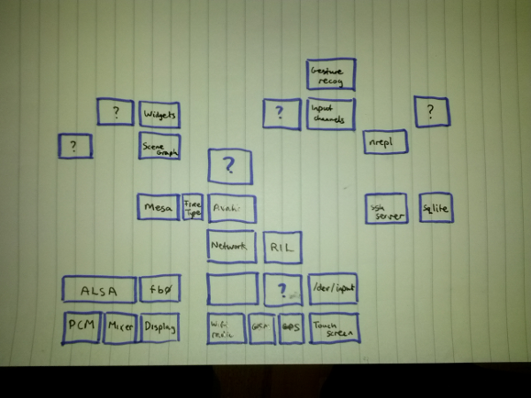

In outline
Take an Android phone, install a proper Linux distribution and a
Clojure installation on it, then write/join up components using
core.async. Input will be from RIL and the internet and the kernel
input layer, output will be via OpenGL(ES)
